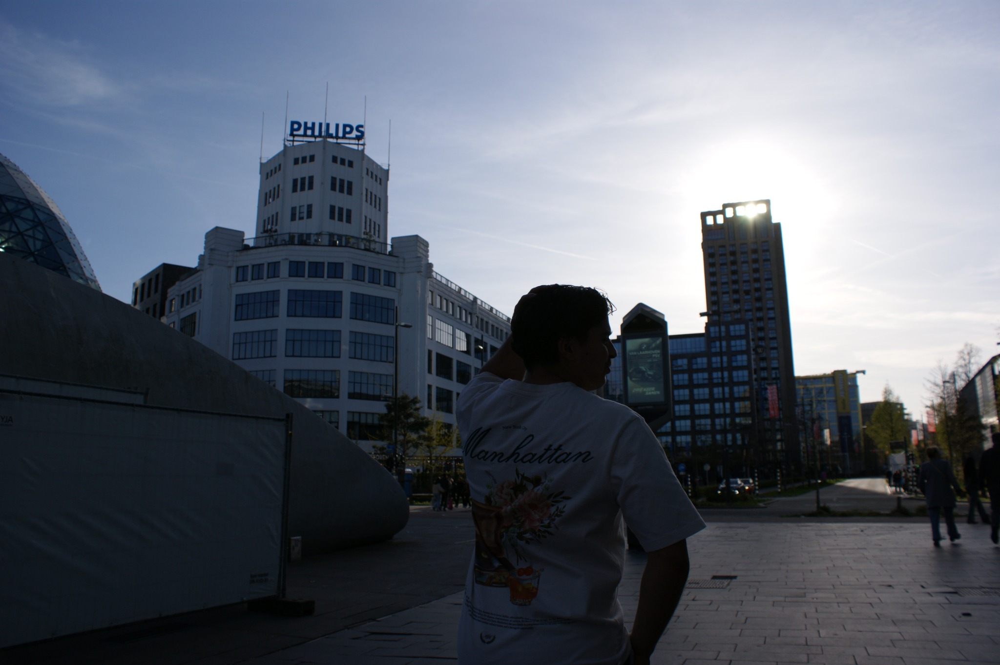
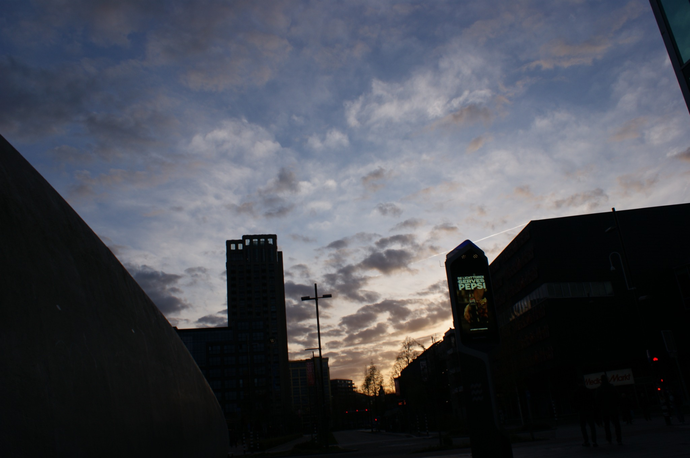
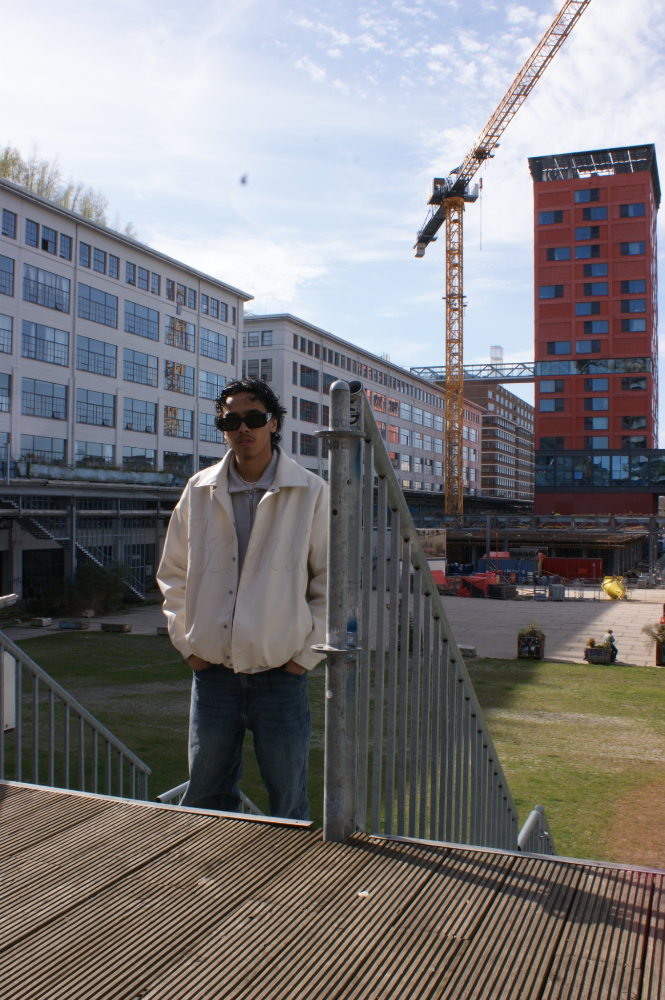

SEE BEYONDTHE FRAME.
Ik ben Lesley. Ik maak beelden met karakter — van automotive en portretten tot events en creatieve ideeën. Geen vaste formule. Wel een eigen blik.

01 / PORTRAIT STUDY
02 / AUTOMOTIVEREAL MOMENTS.
NEW PERSPECTIVES.
Een selectie uit mijn fotografie. Elk beeld heeft een eigen verhaal, sfeer en karakter. Bekijk het werk en ontdek wat bij jouw idee past.

NOT JUST
A PHOTO.
Ik ben Lesley Samuels, de fotograaf achter Lesloy Visuals. Ik kijk graag net even anders naar licht, details en momenten. Samen vertalen we jouw idee naar beelden die echt bij je passen.
MEET THE PHOTOGRAPHER ↗YOUR IDEA.
MY LENS.
Van een gerichte shoot tot een creatief project. We stemmen de aanpak af op wat je wilt vertellen.

MORE ANGLES.
ONE VISION.
Voor projecten die om meer vragen, werk ik samen met Jayden van Smit Works. Twee fotografen, ieder met een eigen blik. Samen of afzonderlijk te boeken.
DISCOVER THE DUO ↗TRUST IS
IN THE DETAILS.
“Lesley denkt creatief mee en de foto's waren super mooi!”LUCA HEINTJES · EVENT PHOTOGRAPHY · ★★★★★
LET'S MAKE
IT VISUAL.
Een shoot, samenwerking of idee dat je wilt uitwerken? Vertel me erover.
GET IN TOUCH ↗